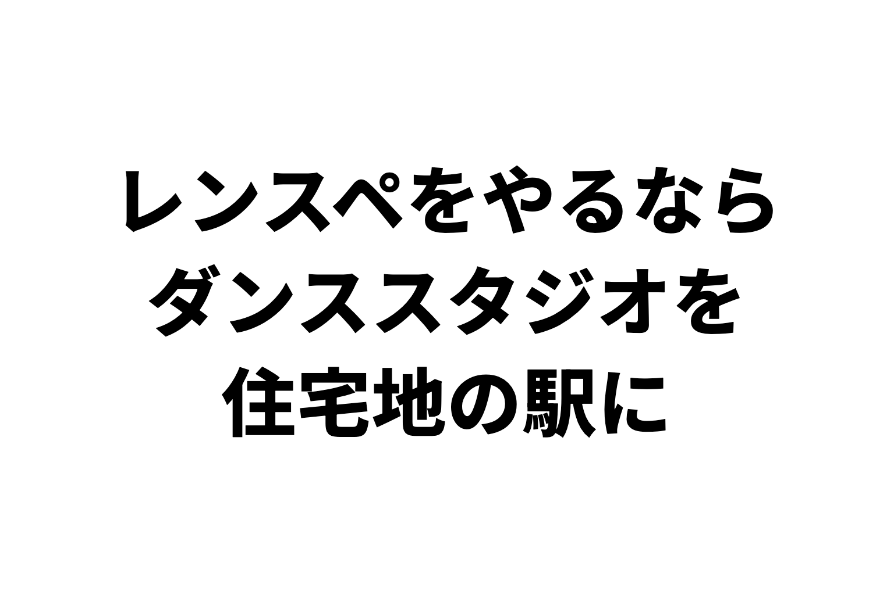
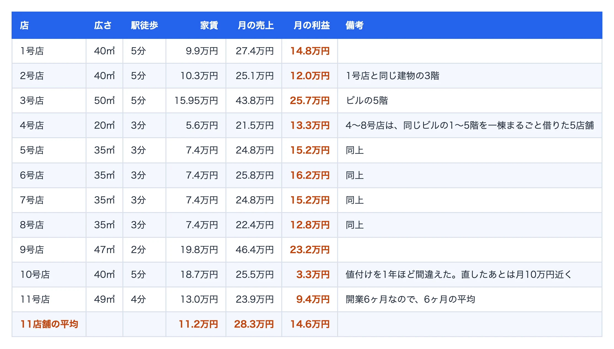
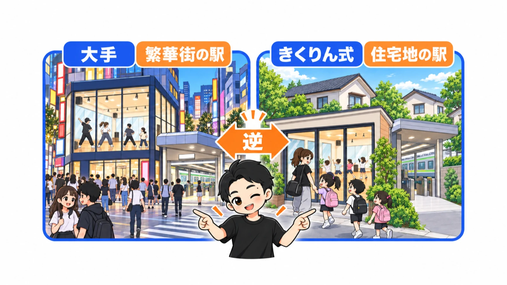
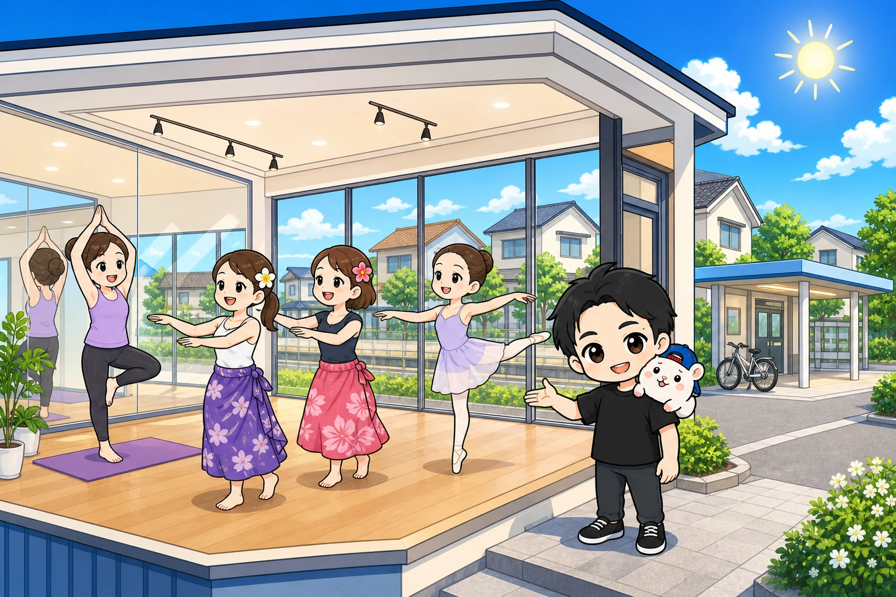
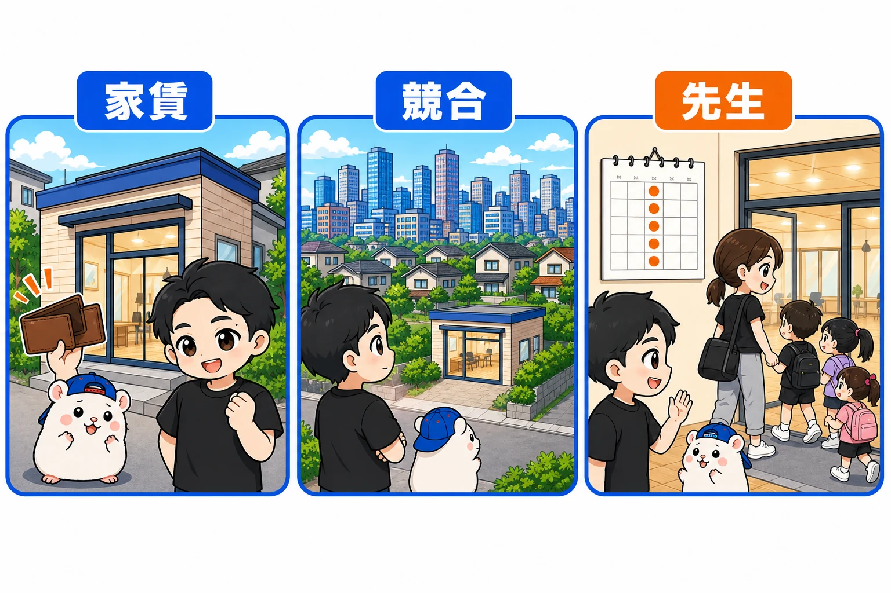
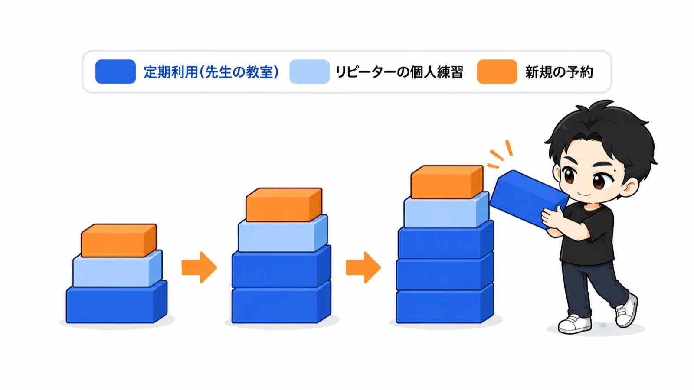
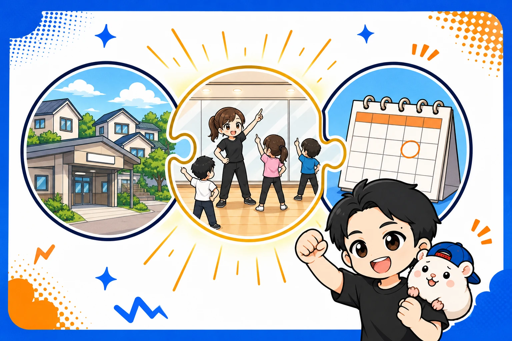

レンタルスペースをやるなら、ダンススタジオ。
そして、出すのは住宅地の駅です。
都心の大きな繁華街の駅でも、オフィス街の駅でもありません。
「え、駅から遠い住宅街に出すの?」
ちがいます。
駅から近いのは、大前提。
選ぶのは、駅の種類です。
ぼくはこれまで、レンタルスペースを累計23店舗出してきました。
いちばん多いのが、ダンススタジオの11店舗です。
今日は、その出し方のいちばん大事なところ。
「きくりん式」の話をします。
1. 11店舗の平均で、月の利益は14.6万円
先に、数字から出します。
ぼくが出してきたダンスのレンタルスタジオ11店舗の平均で、月の利益は14.6万円です。
家賃は平均11.2万円。
売上は平均28.3万円。
利益は、売上から家賃・Wi-Fi・水道光熱費・広告費を引いた額です。
清掃費や消耗品、ぼくの人件費と初期費用は入っていません。
直近12ヶ月の月平均です(運営中の店は2026年5月まで、撤退した店は最後の12ヶ月)。

ぼくの店舗の台帳から(直近12ヶ月の月平均。11号店は開業6ヶ月なので6ヶ月の平均)
11店舗とも、駅から歩いて5分以内。
直近12ヶ月の平均で見て、赤字の店はゼロです。
いま運営している店でいちばん利益が大きい9号店は、平均で月23.2万円。
直近では、月30万円を超える月も出ています。
無人で回るので、ぼくが店に立つことはありません。
運営にかける時間は、1店舗あたり1日数分です。
「ほんとに?」
そう思いますよね。
でも、赤字ゼロは腕自慢ではありません。
いちばん大きな固定費である家賃を、最初に低く抑える。
すると、黒字になるのに必要な予約が少なくてすむので、大負けしにくい。
しくみの話です。
ただし、撤退は2回しています。
どちらも、最後の月まで利益は出ていました。
そして、家賃を低く抑えられるかどうか。
これは、どの駅に出すかで決まります。
2. 駅から近いのは大前提。選ぶのは「駅の種類」
ダンスのレンタルスタジオを、どの駅に出すか。
まず、駅から近いこと。
これは大前提です。
教室の生徒さんもリピーターさんも、駅からの距離には敏感です。
なので、ぼくは徒歩7分以内を基準にしています。
じゃあ、どの駅か。
ふつうは、こう考えますよね。
「人が集まる駅がいい。乗り降りする人が多いほどいい」
大手のレンタルスタジオは、実際にそうしています。
繁華街の駅前に、何十室も出す。
1時間の値段を安くして、いつでも借りられるようにする。
繁華街の駅 × 低単価 × フリー利用。
ぼくは、その逆をやっています。
住宅地の駅 × 教室利用 × 定期。
駅って、性格が分かれるんです。
- 繁華街
- 商業地
- オフィス街
- 学生街
- 住宅地
このうち、住宅地の性格をもつ駅の、駅近に出します。
昼間の人口が「減る」ような住宅地の駅が、ベストです。

「人通りが多いほうが、いいんじゃないの?」
そう思いますよね。
順番に説明します。
3. レンタルスタジオの勝負は「平日の昼間」

ダンスのレンタルスタジオの予約って、平日の夕方以降と土日は、わりと入るんです。
学校帰りのキッズダンス。
仕事帰りの大人の教室。
土日のチーム練習。
ここは、値段さえまちがえなければ入ります。
差がつくのは、平日の昼間。
ここを埋められるかどうかで、スタジオの売上が決まります。
じゃあ、平日の昼間にスタジオを使うのは、だれか。
主婦の方が中心です。
ヨガ、フラダンス、大人のバレエ、子どもを預けている間の個人練。
実際に、ぼくの店のヨガとピラティスの予約は、9割が17時までにはじまります。
じゃあ、主婦の方はどこに住んでいるか。
住宅地です。
オフィス街には、いません。
学生街にも、いません。
昼間の人口が多い駅は、働く人と学生の駅。
昼間の人口が「減る」駅が、主婦の方が暮らしている駅なんです。
一見、昼間に人がいなくて不安に見えます。
でも、ダンスのレンタルスタジオにとっては、そこが正解です。
先生の立場で考えてみてください
あなたがヨガの先生だとして、平日の昼間に教室を開くとします。
どこで開きますか。
都心の繁華街で高い利用料を払って、生徒さんに遠くから来てもらいますか。
それとも、生徒さんがたくさん住んでいる住宅街の駅で開きますか。
後者ですよね。
先生は、生徒さんの家の近くで、気軽に来てほしい。
だから、スタジオもそこにあるべきなんです。
4. 住宅地の駅に出すと、いいことが3つ

① 家賃が安い
ぼくの家賃の基準に入る物件は、繁華街の駅前には、ほぼありません。
住宅街の駅なら、駅近でも基準内の物件がふつうにあります。
家賃が安いと、予約が少ない月でも黒字になりやすい。
② 競合が少ない
大手は、繁華街の駅を中心に出しています。
住宅地の駅にあるのは、だいたいこの2つです。
- ダンス教室が自分たちのために作ったスタジオ(貸していないか、貸していても高い)
- 個人が小さくやっているレンタルスタジオ
ぼくの店の近くにも、競合は1店舗くらいはあります。
ゼロではありません。
でも、何十室もある大手と値下げ競争をするのとは、まったく別の世界です。
「先生がレッスンで使える、ちゃんとした鏡のある部屋」を、ふつうの値段で貸す。
それだけで、先生が見つけてくれます。
③ 先生が毎週来てくれる
これが、きくりん式の最後のピースです。
5. 「毎週来てくれる人」がいるレンタルスタジオは、強い
定期利用というのは、「毎週火曜の10時から2時間」のような使い方です。
同じ曜日・同じ時間を、ずっと使ってもらう。
ダンスやヨガの先生が、教室として使ってくれます。
これが、なぜ強いのか。
売上が、積み上がっていくからです。
ふつうの商売は、毎月、新しいお客さんを集めつづけないといけません。
今月来た人が、来月も来るとはかぎらない。
毎月、ゼロからのスタートです。
ダンスのレンタルスタジオは、ちがいます。
一度使ってくれた先生は、来週も、来月も、来年も来てくれます。
教室をやめないかぎり、ずっとです。
そこに、2人目の先生が入る。
3人目の先生が入る。
生徒さんが、個人練習でも通ってくれるようになる。
土台の上に、土台が重なっていく。

例えば、ぼくの店でいちばん強い9号店。
住宅地の駅にあります。
この店には、先生の定期利用が何本も入っています。
夕方の時間帯は、いつも9割近くが埋まっています。
もうひとつ、例を。
別の店で、先生の定期利用が1本から4本にふえたとき。
先まで入っている予約が、2倍以上になりました。
土台が3本ふえただけで、店の景色が変わります。
そして、いま運営している5店舗で、公式サイトと定期の予約を実測すると、91%がリピーターでした。

運営中の5店舗の実測(公式サイトと定期の予約。予約サイト経由は名前が分からないので入っていません)
これは偶然ではありません。
住宅地の駅に出す。
先生に、教室として使ってもらう。
生徒さんも、個人練習で通ってくれるようになる。
だから、同じ人が何度も来る店になるんです。
6. きくりん式は「住宅地の駅 × 教室利用 × 定期」

まとめます。
- 駅から近いのは大前提(徒歩7分以内)
- 選ぶのは、繁華街ではなく住宅地の駅
- 平日の昼間を、主婦の方と先生で埋める
- 先生の定期利用で、売上を積み上げる
この3つがそろうと、スタジオはぐっと埋まりやすくなります。
とはいえ、「じゃあ、どの駅が住宅地の駅なの?」となりますよね。
正直に言うと、1号店は不動産サイトからノリで問い合わせた物件です。
運がよかっただけです。
だから、その運を言葉にして、同じことができる形にしました。
いまは、全国の駅を「住宅地かどうか」「人が乗り降りするか」で採点するツールを自作して、毎朝回しています。
レンタルスペースでダンススタジオを出せる物件は、そもそも市場にほとんどありません。
でも、物件は「ない」のではなく、「ふつうに探すと見つからない」だけなんです。
探し方に、型があります。
あなたが気になっている駅は、昼間に人が「減る」駅ですか?
この「きくりん式」を、駅の選び方から物件の判定、定期利用の作り方まで、1冊にまとめました。
📘 『【きくりん式】レンタルスペースは「ダンススタジオ」で稼ぐ！完全ロードマップ』
ぼくの11店舗の実録と、毎日使っている物件探しのツールつきです。
第0部はまるごと無料で読めます。

販売価格は3部売れるごとに3,000円ずつ値上がりします（上限あり）。内容・最新価格は販売ページをご確認ください。
▼もう1つの副業、AI社員だけのeBay輸出店の実録🐹

▼ブログ(レンスペ×eBay、全記事まとめ)